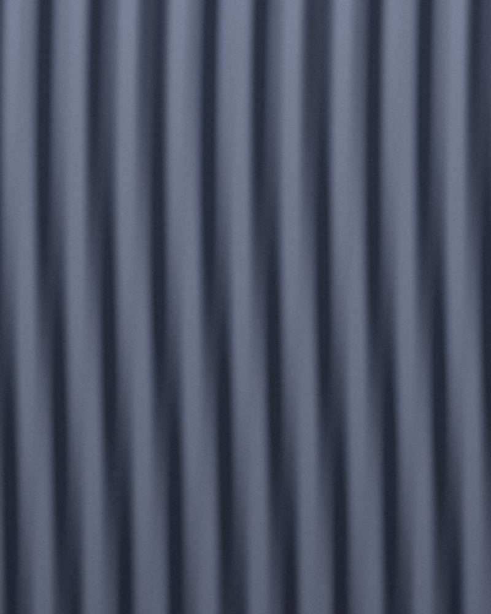

Nos rubriques
Quatre façons de parler de mode, chaque mois.

Tendances
Les couleurs, les matières et les formes de la saison, expliquées simplement.

Créateurs
Portraits de jeunes ateliers et de marques qui fabriquent autrement.

Beauté
Des routines simples et des conseils pour prendre soin de soi sans excès.

Street style
Ce que l'on porte vraiment dans la rue, à Paris et ailleurs.